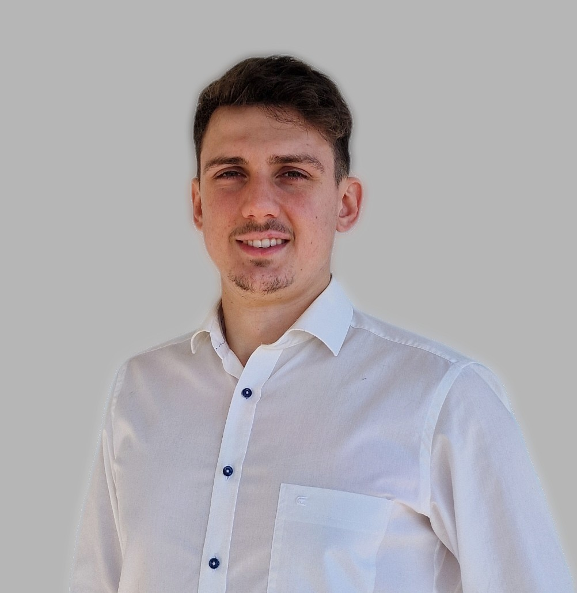

Weiderindfleisch aus ausgewählten uruguayischen Partnerbetrieben, abgestimmt auf Ihre Cuts, Verpackung und Ihren Zielmarkt. Verfügbare Betriebszulassungen, Spezifikationen und Qualitätsnachweise erhalten Sie produkt- und chargenbezogen mit dem Angebot.
Kunz Sourcing liefert nach Kundenspezifikation und übernimmt die operative Abwicklung in Uruguay.
Wir liefern Weiderindfleisch nach vereinbarter Spezifikation und stimmen Herkunft, Fütterung und Produktanforderungen mit geeigneten Betrieben ab.
Aussagen zu Fütterung, Tiergesundheit, Zertifizierungen und Rückständen gelten gemäß der Dokumentation des konkret angebotenen Betriebs und Produkts.
Verfügbare Herkunfts- und Rückverfolgbarkeitsdokumente werden passend zur Ware, Charge und Lieferkette bereitgestellt.
Wir übernehmen in Uruguay die Abstimmung von Verpackung, Kühlanforderungen, Verladung und Versanddokumentation.
Von Premium-Teilstücken bis zu Verarbeitungsschnitten. Produktspezifikation und verfügbare Nachweise erhalten Sie mit dem konkreten Angebot.
Hochwertige Cuts wie Rib Eye, Lomo (Filet) und Bife de Chorizo (Roastbeef), vakuumverpackt und schockgefrostet oder frisch gekühlt für den direkten Weiterverkauf.
Verarbeitungsschnitte sowie – sofern für Herkunfts- und Zielland zugelassen und logistisch umsetzbar – ganze Hälften oder Viertel nach Kundenspezifikation.
Direktversand aus Uruguay in stabilen Vollcontainer-Lieferungen (FCL) – transparent und planbar.
Rindfleisch pro Container
Ideal für mittlere Volumen und Testlieferungen im größeren Maßstab.
Rindfleisch pro Container
Die effizienteste Lösung für Großabnehmer und kontinuierliche Versorgung.
Von der ersten Anfrage bis zur Ankunft im Hafen – persönlich, transparent und auf Augenhöhe.
Sie nennen Cuts, Menge und gewünschten Verarbeitungszustand.
Wir prüfen Partnerbetrieb, Verfügbarkeit und Zielmarktzulassung und erstellen ein Angebot mit Spezifikation.
Bei Einigung: Vertragsabschluss und Anzahlung.
Kunz Sourcing koordiniert die vereinbarten Kontrollen und Dokumente mit dem liefernden Partnerbetrieb.
Verladung, Container-Tracking und Transport gemäß bestätigter Route.
Ankunft im Zielhafen. Zollabfertigung durch Sie als Importeur.
Wir kalkulieren jedes Angebot auf Grundlage Ihrer Spezifikation, der verfügbaren Ware und der vereinbarten Lieferbedingungen. Der Preis hängt unter anderem von folgenden Faktoren ab:

Ich bin Stanley Kunz und betreue Kunz Sourcing vor Ort in Uruguay. Kunz Sourcing ist der auf internationalen B2B-Handel spezialisierte Geschäftsbereich von Kunz Global. Wir liefern nach Kundenspezifikation und übernehmen Beschaffung, Qualitätsabstimmung und Exportabwicklung.
Sie erhalten eine klare Zuordnung von Produkt, Lieferbetrieb, Spezifikation und verfügbaren Nachweisen. Die Einfuhr- und Marktzulassung wird für das konkrete Zielland vor Vertragsabschluss geprüft; die Einfuhrabwicklung übernimmt der Käufer beziehungsweise sein Importpartner.
Teilen Sie uns Cuts, Menge, Zielland, Zielhafen und Lieferzeitraum mit. Wir bestätigen den Eingang kurzfristig und melden uns nach Prüfung von Verfügbarkeit, Zulassung und Lieferantenkonditionen.